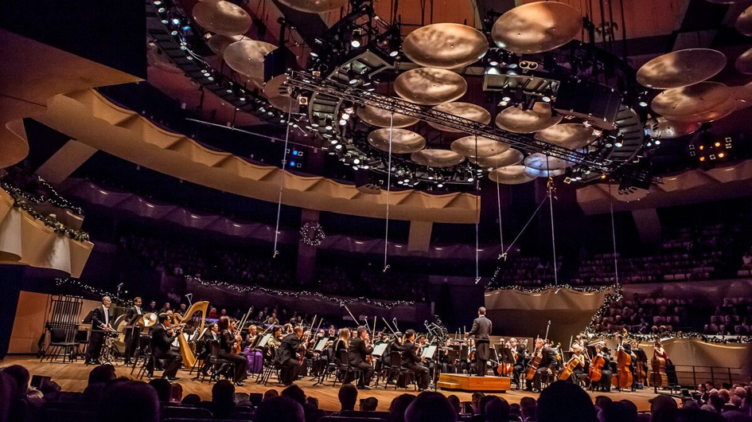

Vivaldi's The Four Seasons
OCT14-16 FRI-SAT 7:30 SUN 1:0
Symphonic bliss awaits you as your Colorado Symphony and guest conductor Aram Demirjian present a
powerhouse program highlighted by Vivaldi’s programmatic masterpiece, The Four Seasons. As striking
and admired as ever, this work conjures imagery that deftly captures the essence of spring, summer,
autumn, and winter through music that manages to remain strikingly modern three centuries after its
debut. Paul Huang is just the virtuoso to embrace this beloved concerto in its return to Boettcher Concert
Hall.
The grand finale — Tchaikovsky’s Fourth Symphony — is a meticulously structured meditation on fate
that endures as one of his most popular and identifiable compositions. Over four movements,
Tchaikovsky transforms his personal battle with fate into one of humanity’s most powerful works of art.
Among today’s best and brightest composers, Jessie Montgomery’s Strum draws on the spirit of dance,
movement, and American folk expressions in an ecstatic celebration that will have you on the edge of
your seat.
Aram Demirjian, conductor
Paul Huang, violin
JESSIE MONTGOMERY Strum
VIVALDI The Four Seasons, Op. 8, No. 1-4
TCHAIKOVSKY Symphony No. 4 in F minor, Op. 3
